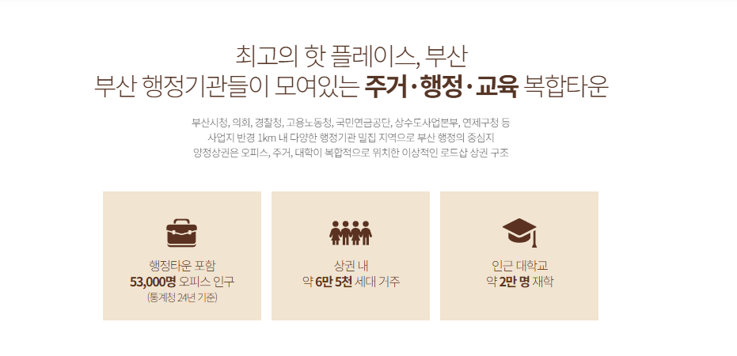
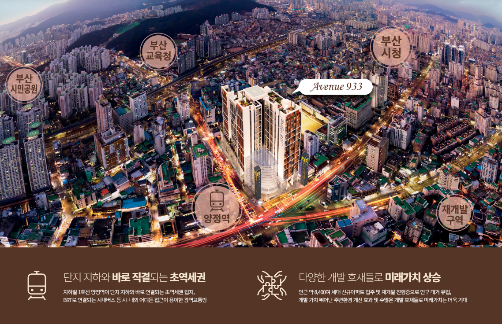

1. 상가분양은 유동인구보다 ‘반복 이용 수요’를 먼저 봅니다
거리에서 사람이 많이 지나간다고 해서 모든 업종이 안정적으로 운영되는 것은 아닙니다.
병원, 약국, 카페, 식당, 교육, 미용, 생활서비스처럼 주민이 반복적으로 이용하는 업종이라면 일시적인 유동보다 생활권 안에서 계속 발생하는 소비가 중요할 수 있습니다.
2. 약 6만5천 세대 배후는 업종별로 다르게 해석해야 합니다
제공된 안내자료에는 양정 상권 내 약 6만5천 세대가 안내되어 있습니다.
같은 배후수요라도 업종마다 의미가 다릅니다. 병의원은 재진과 보호자 동반 방문, 식음은 회전과 체류, 교육과 뷰티는 예약형 방문, 생활서비스는 근거리 반복수요가 중요하므로 내 업종과 실제로 연결되는지 확인해야 합니다.

※ 본 사이트 내에 사용된 이미지는 소비자의 이해를 돕기 위해 참고용으로 제작된 것으로 실제 시공 시 다를 수 있습니다.
3. 오피스와 행정수요는 평일 낮 상권을 만드는 요소입니다
안내자료에는 행정타운을 포함한 약 5만3천 명의 오피스 인구와 관공서 24개, 교육기관 77개, 금융기관 40개가 제시되어 있습니다.
평일 낮에는 행정기관 방문객과 직장인 수요가 움직이고 출퇴근 시간에는 지하철 통근수요가 더해질 수 있습니다. 저녁과 주말에는 주거수요 중심으로 소비 성격이 달라질 수 있어 시간대별 상권을 나눠 보는 것이 좋습니다.
4. 역세권은 거리보다 실제 고객 동선이 중요합니다
양정역과 가깝다는 사실만으로는 충분하지 않습니다.
지하철에서 내린 고객이 상가로 자연스럽게 유입되는지, 건물 내부로 들어온 뒤 특정 층과 호실까지 찾기 쉬운지, 날씨 영향을 얼마나 받는지를 확인해야 실제 체감 접근성을 판단할 수 있습니다.
5. 몰형 상가는 건물 전체의 집객력을 봅니다
몰형 상업시설은 한 점포의 유동만으로 판단하기보다 건물 전체에 어떤 업종이 들어오고 어떤 시설이 고객을 오래 머물게 하는지를 함께 봐야 합니다.
병원 방문 뒤 카페나 약국을 이용하거나 식사를 위해 방문한 고객이 다른 생활서비스를 함께 이용하는 식의 연계 가능성이 있기 때문입니다.

※ 본 사이트 내에 사용된 이미지는 소비자의 이해를 돕기 위해 참고용으로 제작된 것으로 실제 시공 시 다를 수 있습니다.
6. 쾌적한 주차환경은 체류형 업종에서 더 중요합니다
차량 방문 고객이 많은 업종은 주차 가능 여부뿐 아니라 주차 후 점포까지 이동이 편리한지가 중요합니다.
변동 가능성이 있는 구체적인 주차대수 대신 실제 주차공간이 쾌적하게 이용될 수 있는지, 엘리베이터와 상가 연결이 편한지, 가족·보호자 동반 고객이 불편하지 않은지를 현장에서 확인하는 것이 좋습니다.
7. 분양가는 반드시 호실 조건과 함께 비교해야 합니다
분양금액이 상대적으로 낮더라도 복도 안쪽이거나 가시성이 떨어지고 업종에 필요한 설비가 부족하다면 실제 운영에서는 비용이 더 들 수 있습니다.
전용면적, 전면 폭, 코너 여부, 에스컬레이터·엘리베이터 거리, 급배수와 전기, 간판 노출을 함께 비교해야 같은 가격대에서도 더 적합한 호실을 찾을 수 있습니다.
8. 장기보유라면 임차인 관점에서 다시 봐야 합니다
임대수익을 목적으로 상가를 분양받는다면 내 취향보다 향후 임차인이 선호할 조건이 중요합니다.
해당 호실에 들어올 가능성이 높은 업종을 몇 가지 가정한 뒤 그 업종이 감당할 수 있는 임대료와 관리비, 필요한 설비, 고객 접근성을 기준으로 검토하는 것이 현실적입니다.

※ 본 사이트 내에 사용된 이미지는 소비자의 이해를 돕기 위해 참고용으로 제작된 것으로 실제 시공 시 다를 수 있습니다.